MerveGöksu
Bringing characters to life through thoughtful costume design, visual storytelling and meticulous costume supervision.
About
Areas of expertiseI am a Costume Supervisor and Costume Designer with experience in television series, feature films and digital productions. I manage the costume process from script breakdown to the final shooting day, ensuring continuity, visual storytelling and efficient department management.
- Costume Supervision
- Costume Design
- Costume Breakdown
- Continuity
- Character Styling
- Budget Management
- Team Leadership
- Fittings
- Aging & Dyeing
- On-set Costume Management
I believe costume is far more than clothing—it is a powerful storytelling tool that reveals a character's identity, history, emotions, and transformation. My vision is to contribute to national and international film and television productions by combining creativity, strategic thinking, and meticulous attention to detail. I strive to create visually compelling characters that enrich the narrative and leave a lasting impression while continuously evolving alongside the ever-changing landscape of the entertainment industry.
My mission is to translate scripts into authentic visual identities through thoughtful costume design and supervision. By understanding each project's creative vision, I ensure that every costume supports character development, narrative continuity, and the overall visual language of the production. From pre-production planning and costume breakdowns to fittings, continuity, and on-set management, I am committed to delivering organized, collaborative, and high-quality work that enhances every production I am part of.
Selected works
Tap a still to playPrens
Max Original · Season 3As the Costume Supervisor for Prens Season 3, I managed the costume department throughout the entire production process, from script breakdown and pre-production planning to the completion of principal photography. My responsibilities included coordinating the costume team, overseeing costume continuity, organizing fittings, and managing all on-set costume operations.
In addition to my supervisory role, I designed the costumes for the Ottoman Empire episode, the pirate characters, the Tin Man (Prince Tin Man) costume, the supporting cast, and the battle sequences, overseeing their development from concept to on-set execution. Working closely with the creative team, I developed costume solutions that enhanced each character's identity while supporting the visual language and storytelling of the series.


Key art and production stills from the second season, where I worked as Costume Designer.
Tap the poster to browse


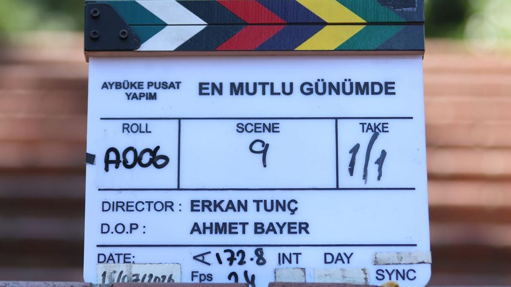
In post · Not yet released


On set
Between the takes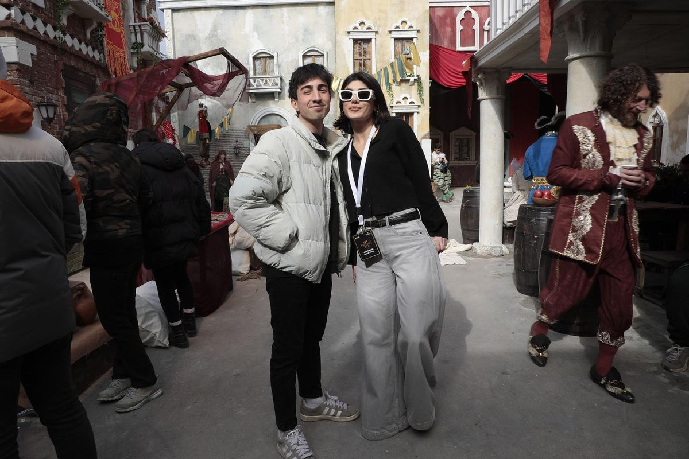
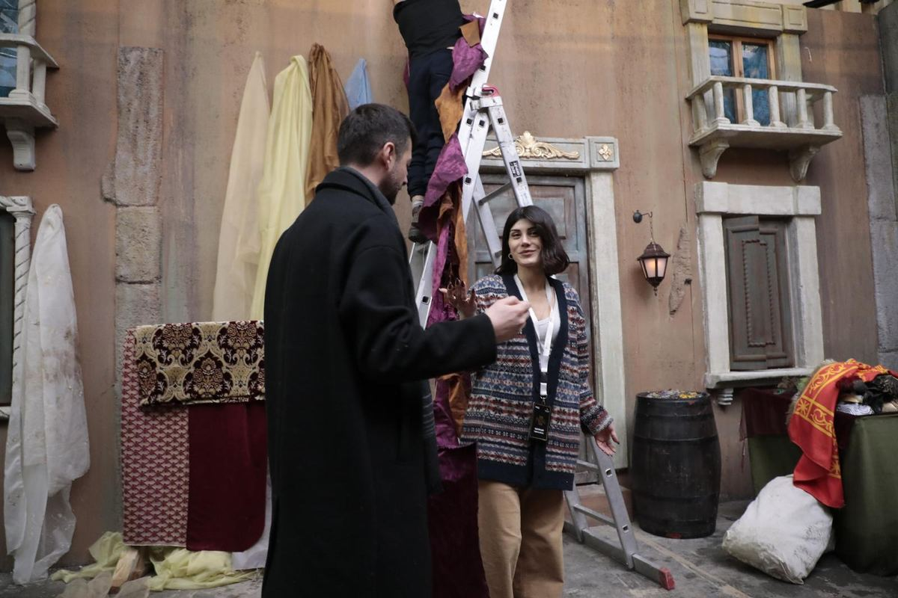
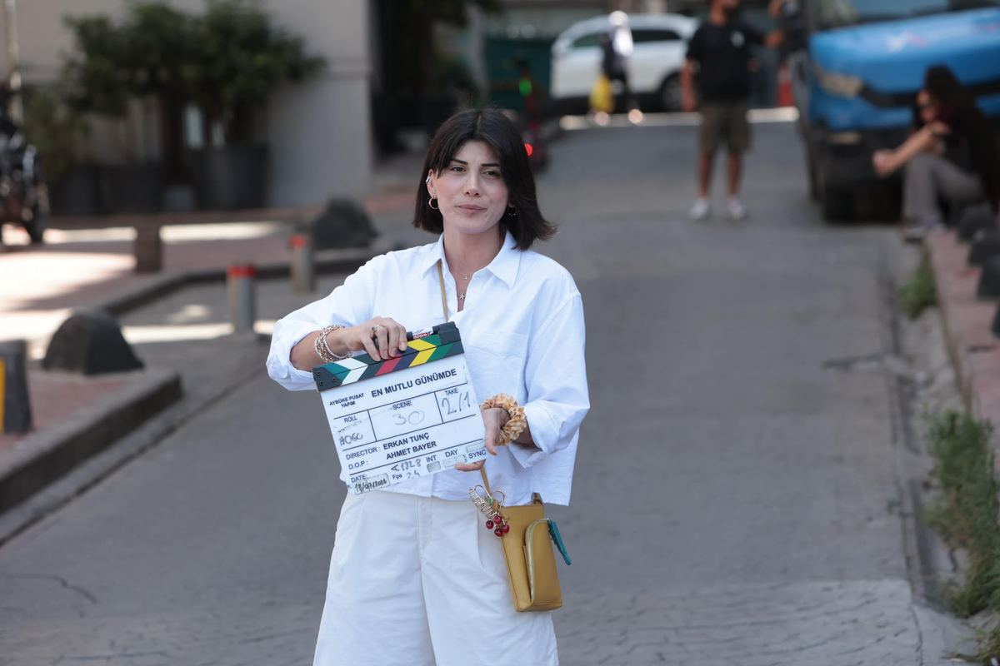
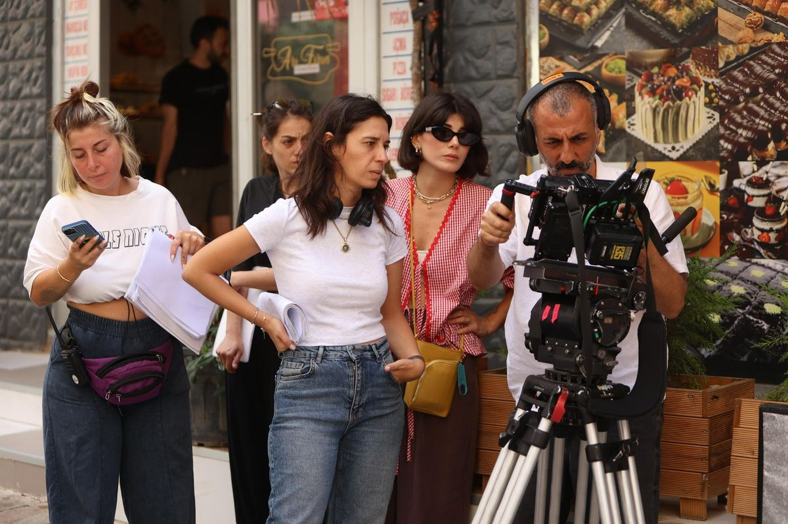
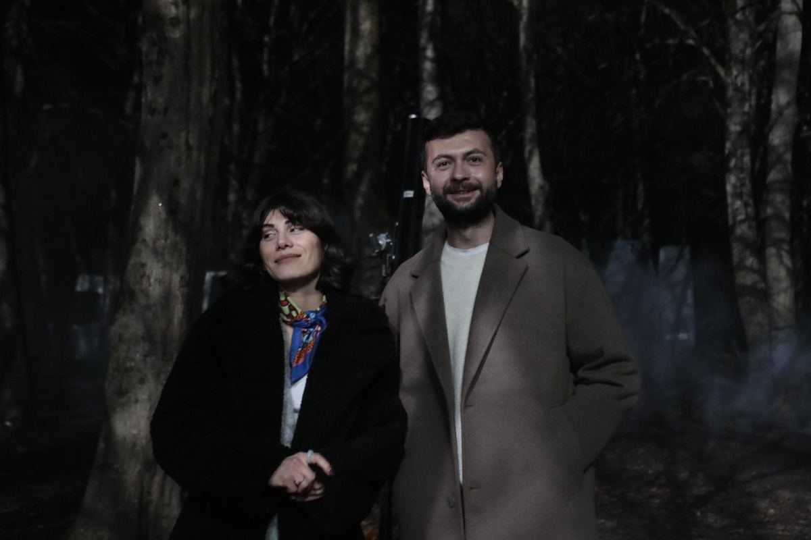
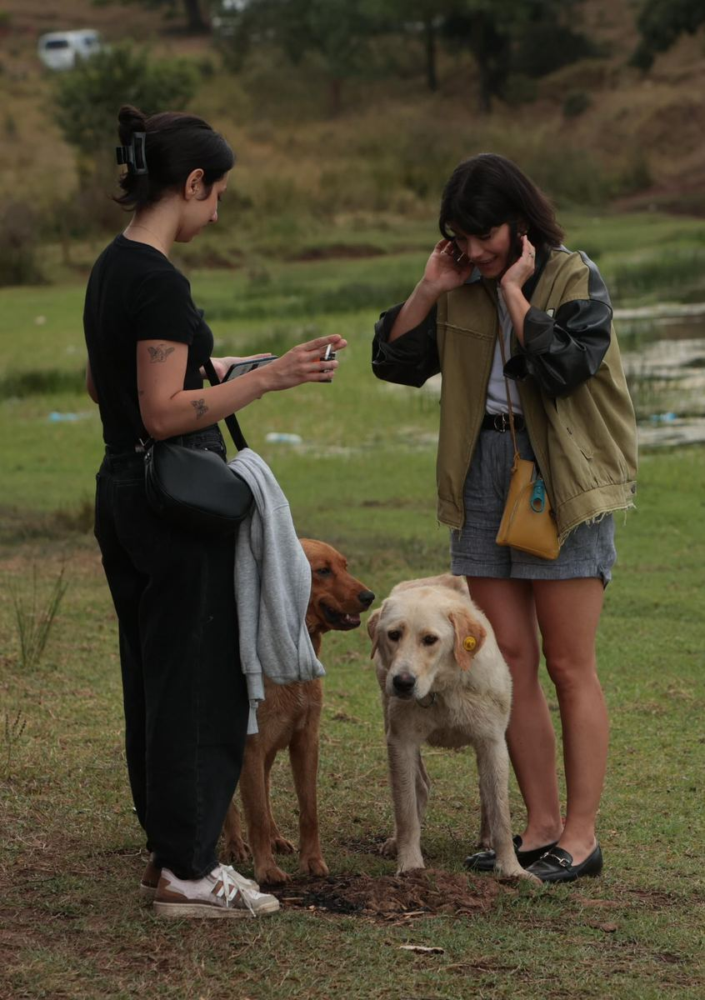
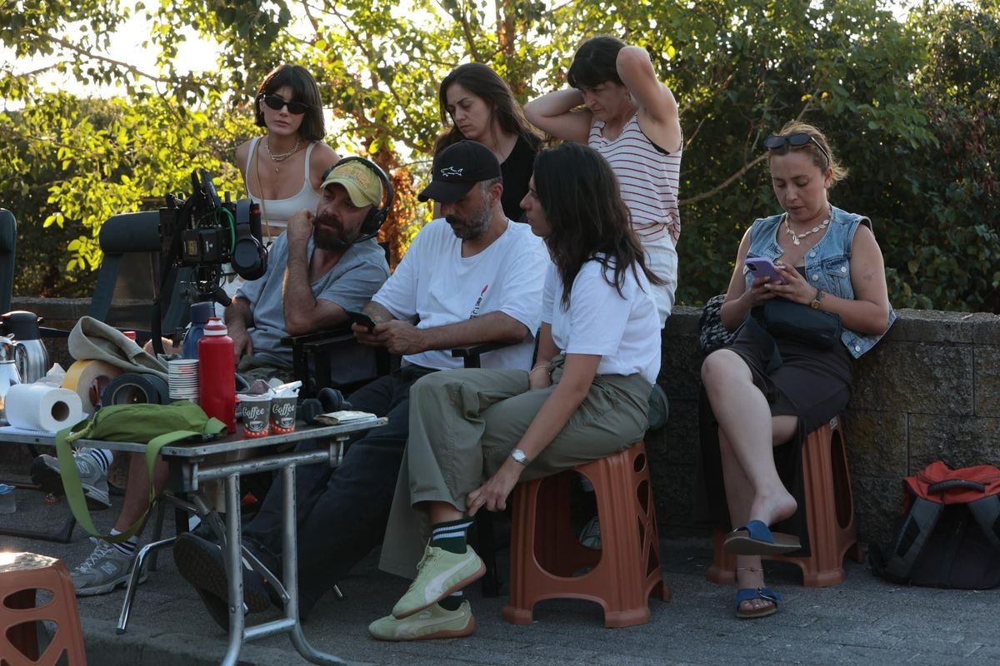
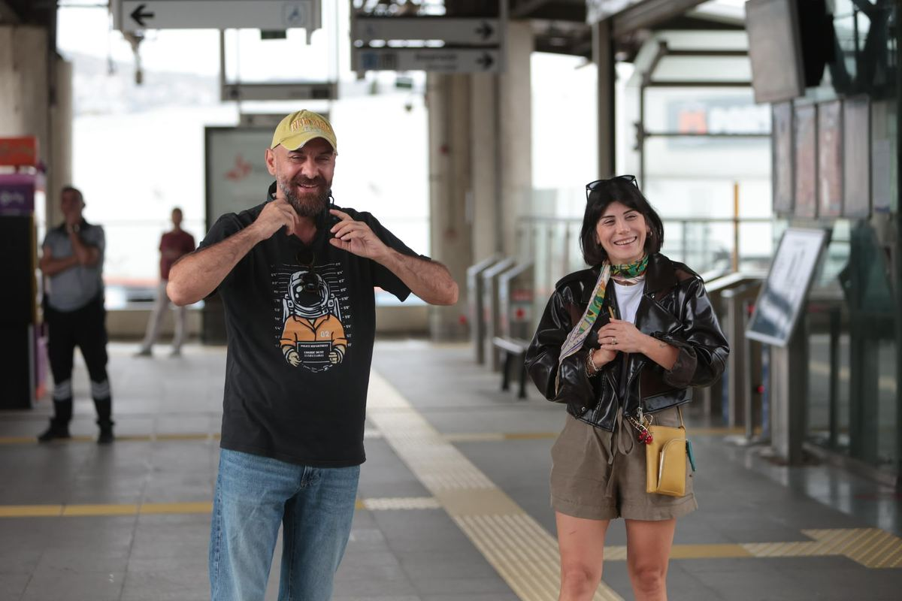
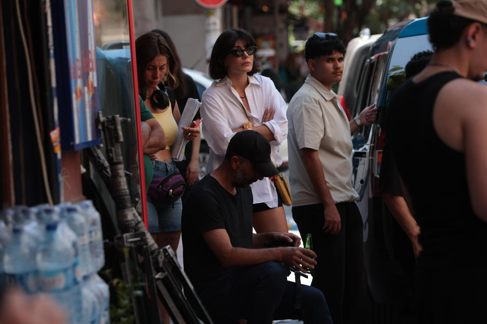
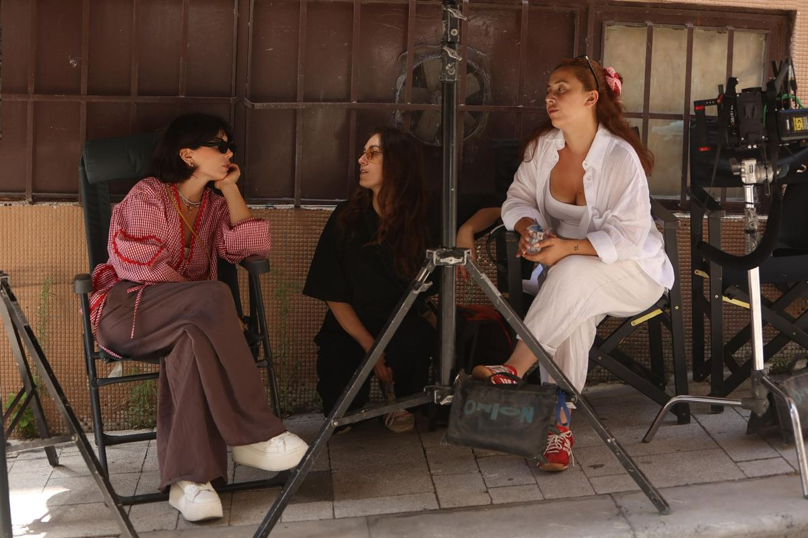
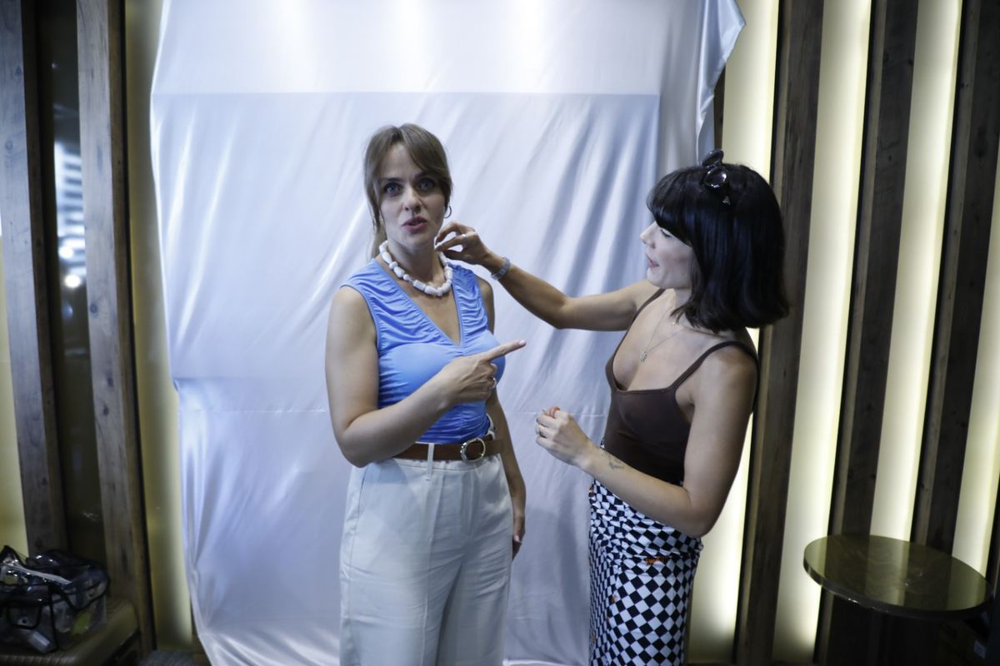
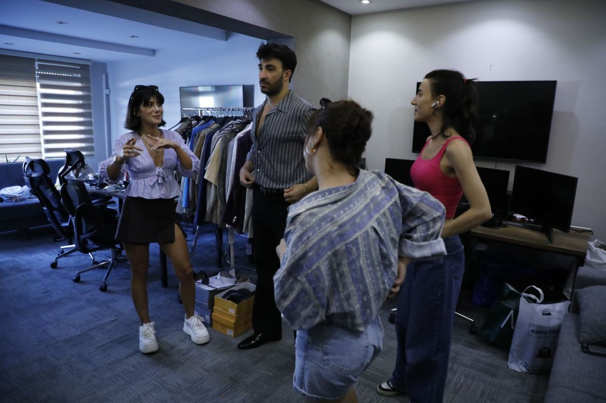
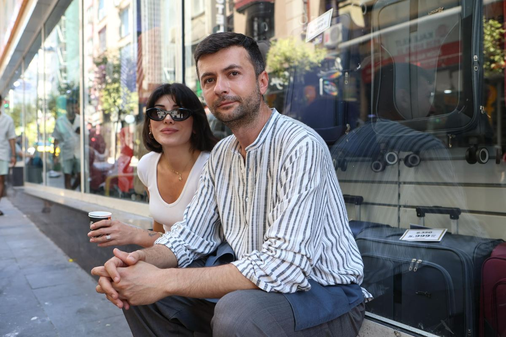
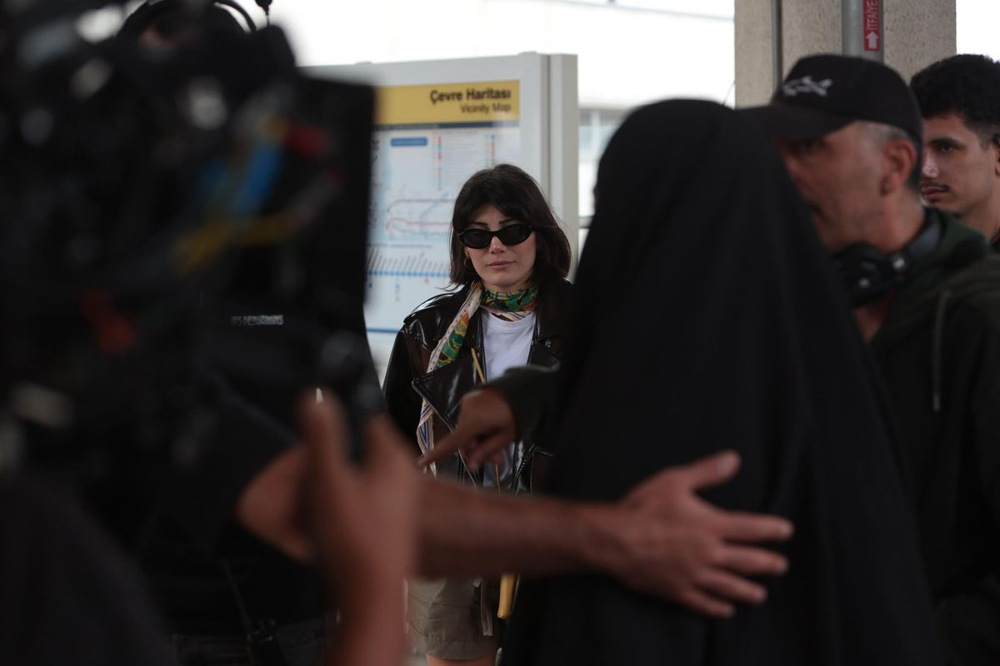
Let's talk about
your project.
Send a short note with the scope and shooting dates, and we'll take it from there.